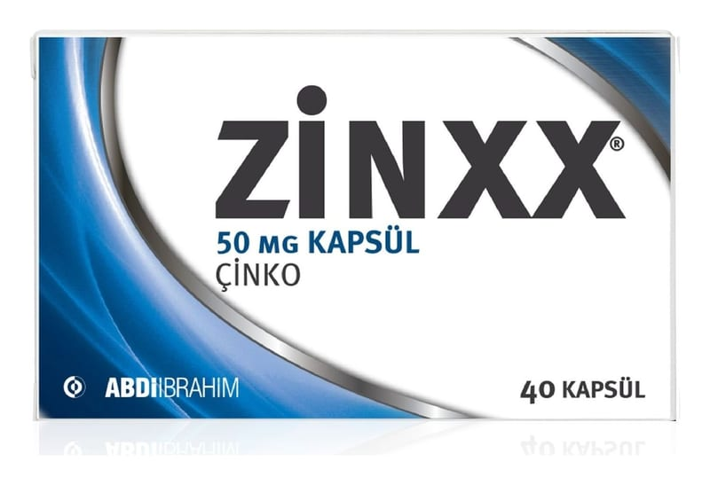

Zinxx 50 mg KAPSÜL,40 Adet

Ne için kullanılır
KT · Bölüm 1ZİNXX, çinko içeren kapsüldür. Blisterlerde 30 veya 40 kapsül olarak sunulur.
Çinko eksikliğinin önlenmesinde / tedavisinde ve/veya vücutta aşırı derecede bakır birikmesi hastalığında (Wilson) ve/veya çinko emilim bozukluğunda (akrodermatitis enteropatika) tedavisinde kullanılır.